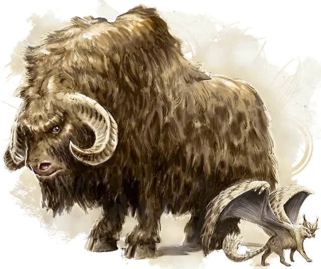

Глубинный роф
Deep Rothe
Средний Зверь (Крупный рогатый скот), без мировоззрения

Класс Доспеха 10
Хиты 13 (2к8 + 4)
Скорость 30 футов
| мод | спас | ||
|---|---|---|---|
| СИЛ | 18 | +4 | +4 |
| ЛОВ | 10 | +0 | +0 |
| ТЕЛ | 14 | +2 | +2 |
| мод | спас | ||
|---|---|---|---|
| ИНТ | 2 | −4 | −4 |
| МДР | 10 | +0 | +0 |
| ХАР | 4 | −3 | −3 |
Чувства тёмное зрение 60 футов, пассивное Восприятие 10
Опасность 1/4 (50 опыта)
Бонус мастерства +2
Среда обитания Подземье
Особенности
Вьючное животное. Роф считается на один размер больше при определении его грузоподъемности.
Действия
Бодание. . Рукопашная атака оружием: +6 к попаданию, досягаемость 5 футов, одна цель. Попадание: 7 (1к6 + 4) колющего урона. Если глубинный роф переместится как минимум на 20 футов по прямой к цели, а затем в том же ходу попадёт по ней атакой бодания, цель дополнительно получает 7 (2к6) колющего урона.
Пляшущие огоньки. Роф накладывает пляшущие огоньки [dancing lights], без затрат ячеек заклинаний и используя Мудрость в качестве базовой характеристики.
Описание
Глубинные рофы - это скот Подземья, который общается друг с другом с помощью заклинания пляшущие огоньки [dancing lights]. Некоторые учёные предполагают, что рофы был родом из Страны Фей и принесли с собой способность накладывать заклинания. Другие учёные приписывают эту способность столетиям, которые они провели в Подземье, где окружающая магия медленно преобразует все.
Крупный рогатый скот
По мультивселенной бродит множество видов крупного рогатого скота, некоторые из них одомашнены, а другие одичали. Во многих культурах крупный рогатый скот считается семьёй для людей, которые за ним ухаживают.